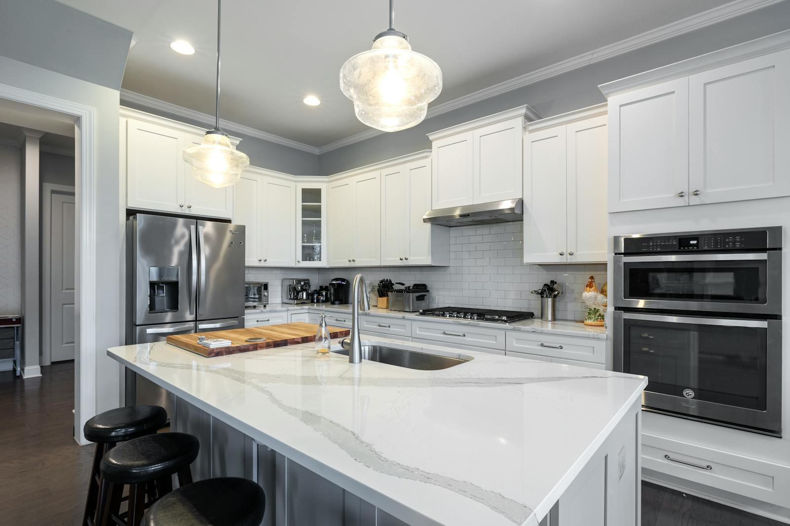

Plumbing & Water Heaters
Reliable Plumbing & Hot Water Solutions
From tank replacements and tankless conversions to general plumbing repairs, cottage plumbing, and underground gas lines, Northern Climate has the expertise to keep your water flowing and your home comfortable year-round.

Water Heater Replacement
Is your water heater on its last legs? We supply and install high-efficiency tank-style water heaters to restore reliable hot water to your home. We handle removal of the old unit, proper sizing, and professional installation.
Tankless Water Heaters
Enjoy unlimited hot water on demand with a tankless water heater. Tankless units heat water only when you need it, saving energy and freeing up space. We handle full conversions from tank to tankless systems.
Plumbing Repairs
Leaky faucets, burst pipes, running toilets, and fixture replacements. Our licensed technicians diagnose and fix plumbing problems quickly so you can get back to your routine without the hassle.
Cottage Plumbing
We specialize in seasonal cottage plumbing across Greater Sudbury and area. From spring opening and fall winterization to pump servicing and pipe repairs, we understand the unique challenges of Northern Ontario cottage life.
Underground Gas Lines
Need a gas line run to your garage, pool heater, outdoor kitchen, or cottage? We handle underground gas line trenching, installation, pressure testing, and inspection coordination from start to finish.
Emergency Plumbing
Burst pipe? Water heater failure? Flooding? When plumbing emergencies strike, Northern Climate responds fast to minimize damage and get your system back up and running. Give us a call anytime.
As a Navien dealer, we install their premium tankless water heaters and boilers — known for industry-leading efficiency, compact design, and advanced recirculation technology for instant hot water.

Rinnai is a global leader in tankless water heating. We install and service Rinnai's full lineup of on-demand systems — delivering endless hot water with exceptional energy savings.
Frequently Asked Questions
Need Plumbing Help?
Whether it is a leaky pipe, a water heater replacement, or a gas line installation, our team is ready to help. Get in touch today for a complimentary quote.